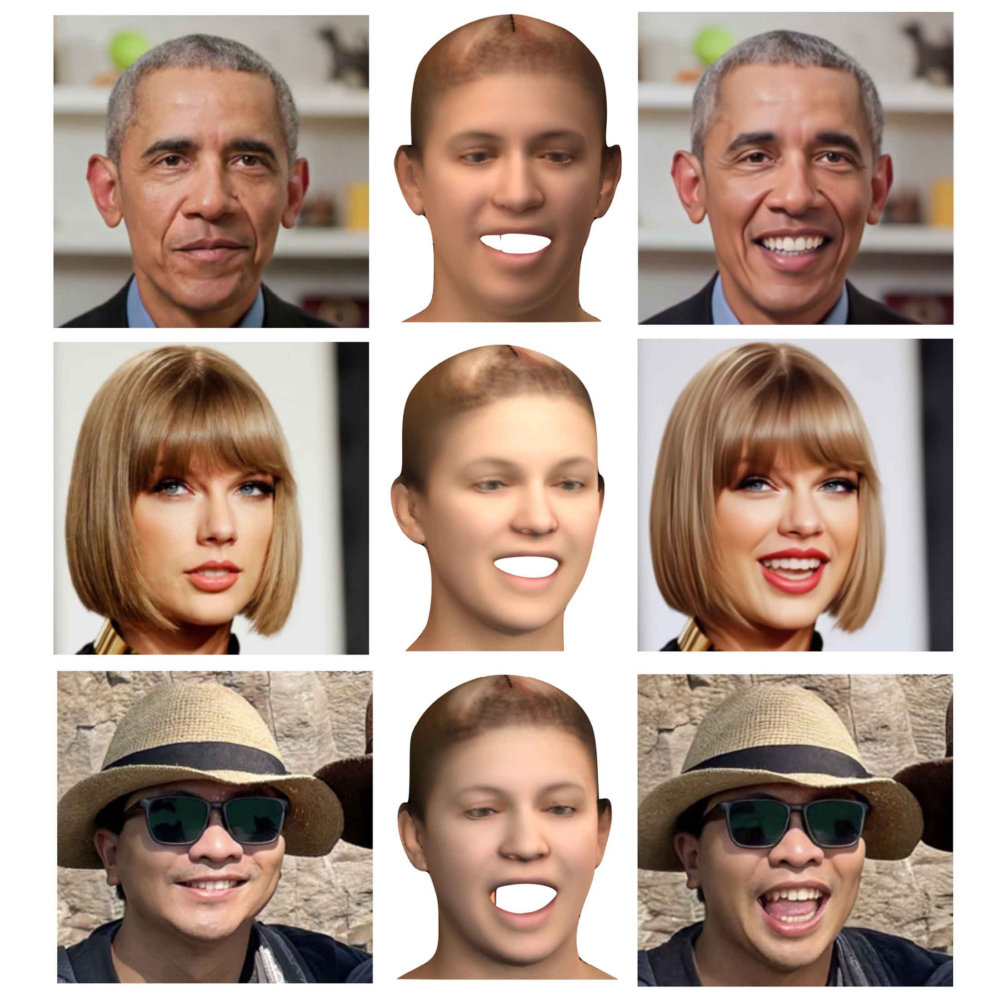
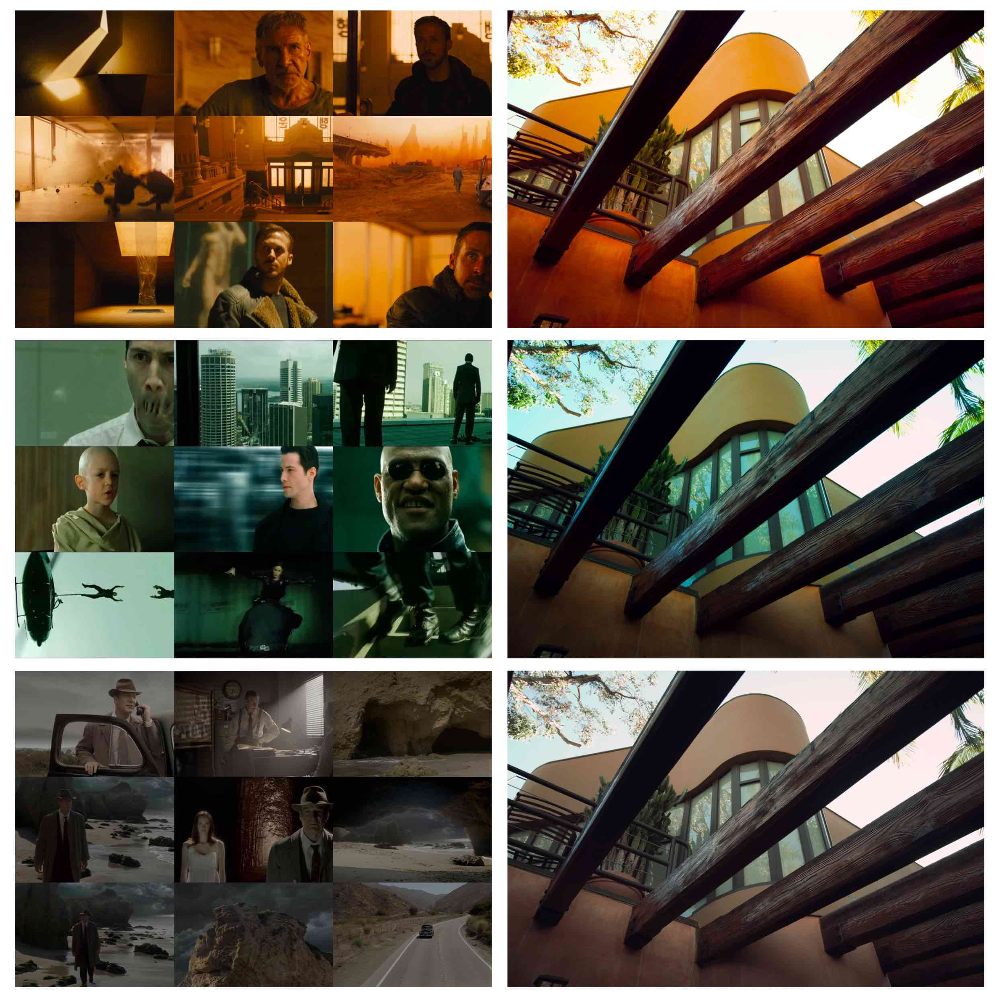
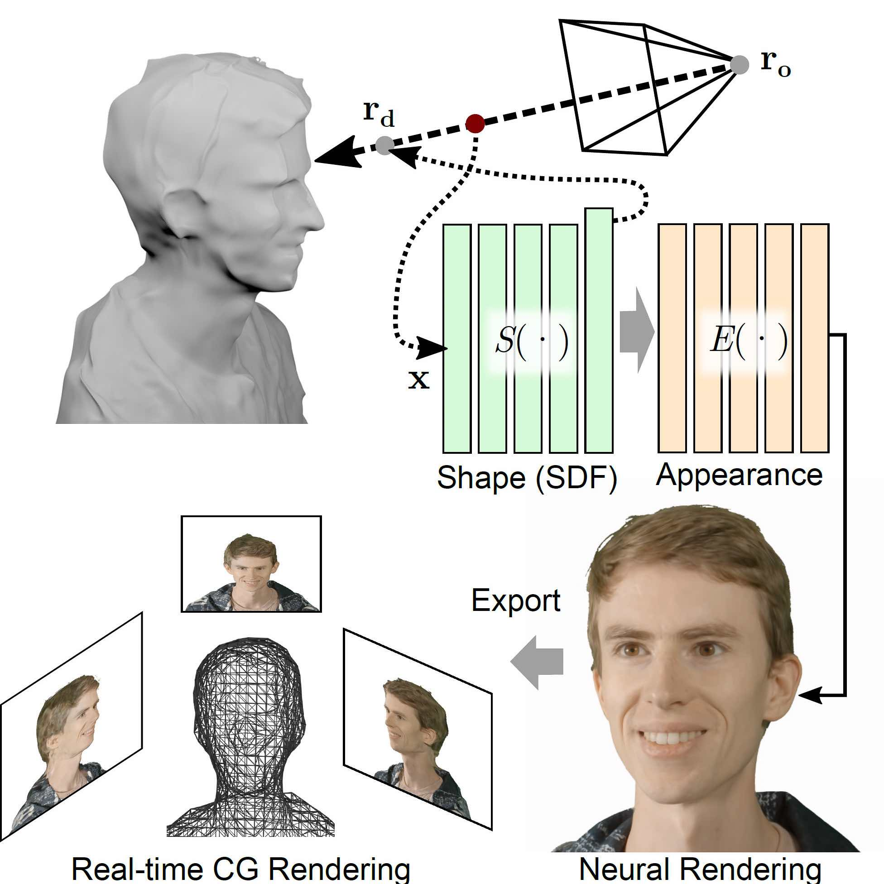
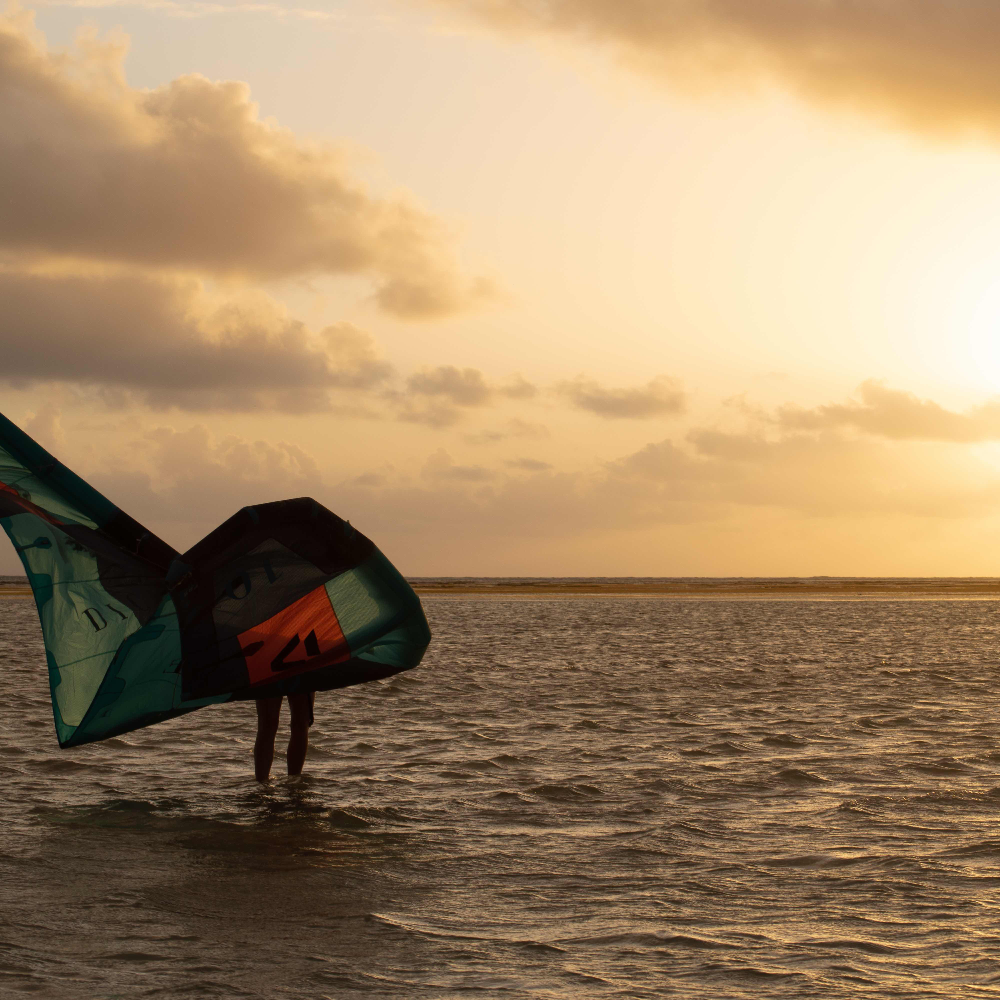
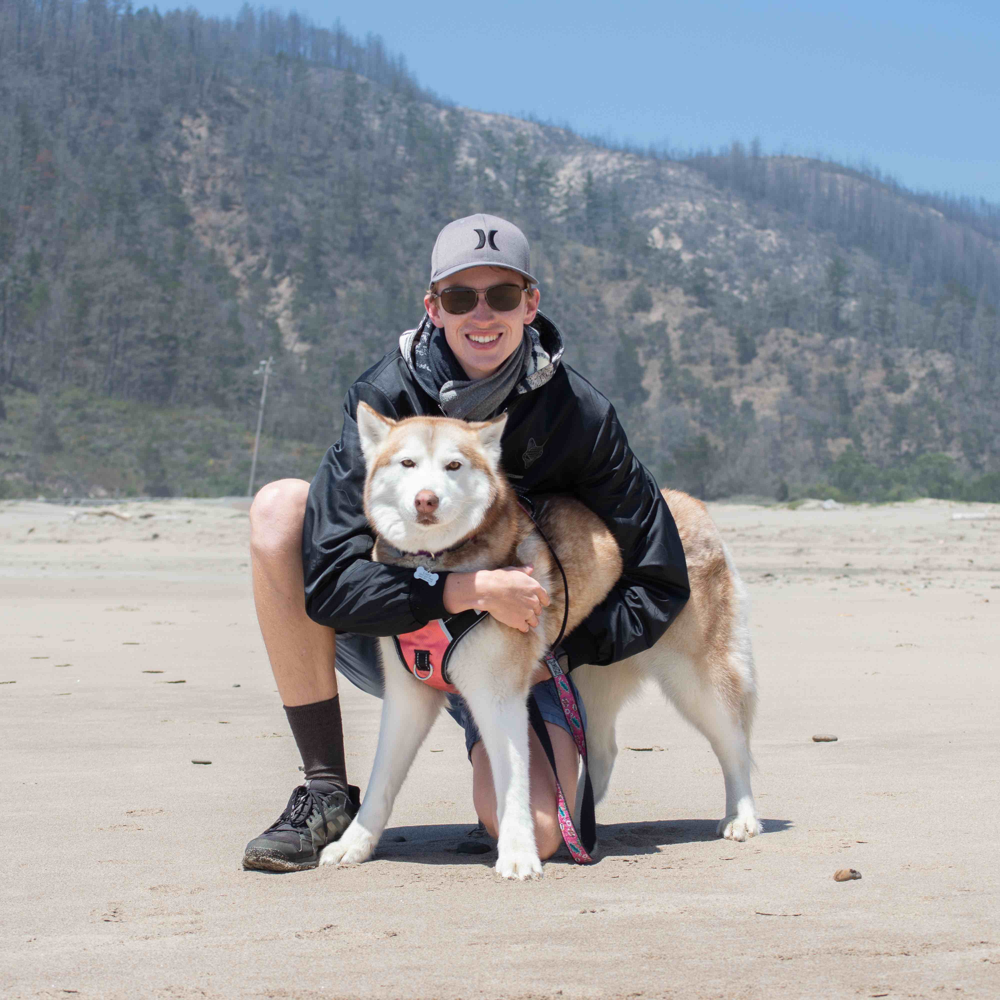

Fraunces for the name, headlines, and section titles. Inter Tight for body, UI, and metadata. JetBrains Mono for labels, chips, years.
Warm near-black background, amber-tilted. Dark mode is designed, not inverted. Three accents share chroma 0.10; amber is primary.
--accent swaps the entire personality of the site. Amber is the recommendation: it pulls directly from the kite-sunset shot, reads as warm rather than corporate, and sits comfortably on the warm-black background without demanding attention.
Single scale, used everywhere. Anything off-scale is a mistake to fix, not a degree of freedom.
Small set on purpose. Project row, photo card, chip, button, nav, filter — that's everything the landing page uses.

Personalized priors for relighting and expression editing on faces using diffusion models. My contribution: data pipeline and per-subject fine-tuning regime.

A learned finishing pipeline that takes raw sensor data and renders it the way a colorist would. Production-relevant; the parts I'm proudest of survived into shipped product.

Real-time view synthesis from sparse captures. The hard part was making it actually fast enough to be useful, not just novel.


Things this system specifically refuses to do.